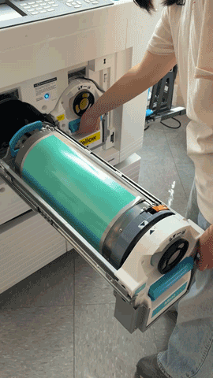
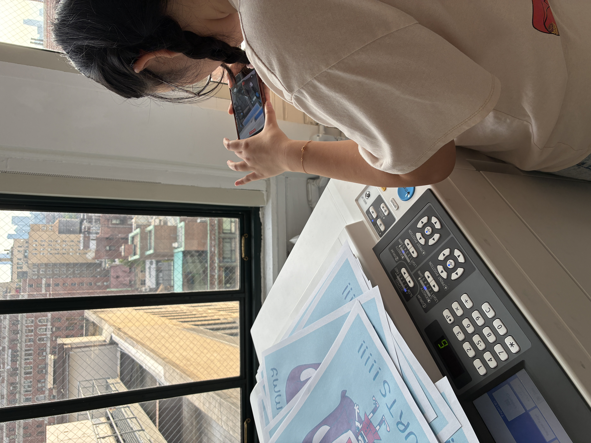
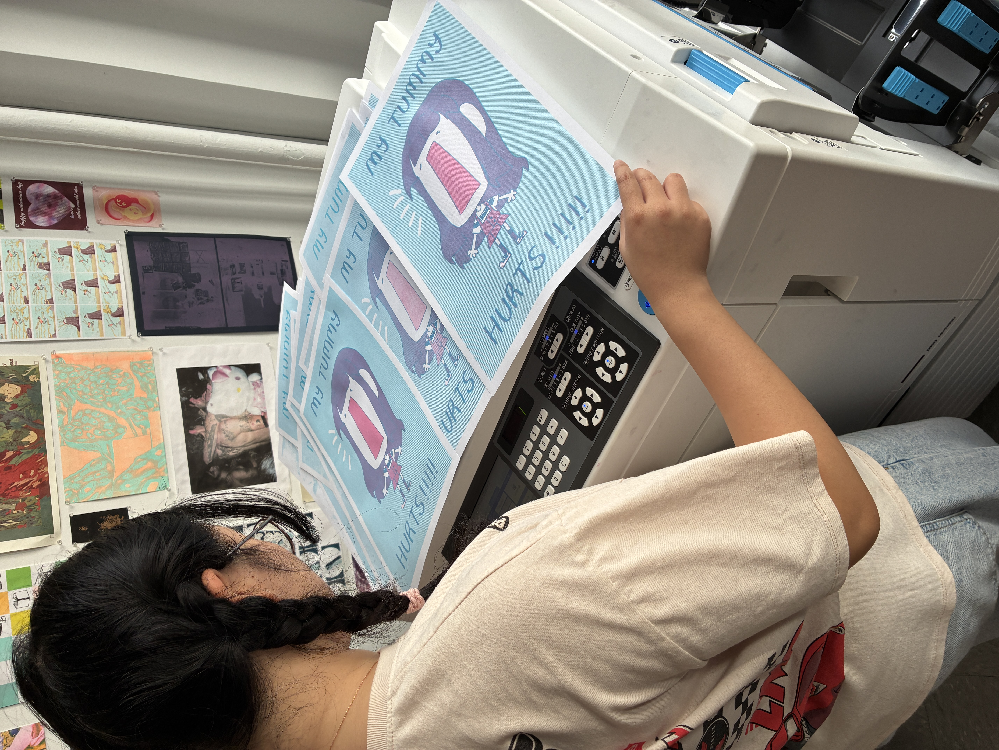

S was assigned to yumin, one of the new riso printers at the design lab.
while master-making for aqua, the prints would have crease marks from the ink drums - which resulted in multiple masters and reprints.
it took 3 tries.
and there were also misprints, which created stripes in the design.
and sometimes the file would glitch while sending; which would make remake a master randomly - it fixed tho!

S didn't change much in the alignment, since it couldn't be straight or exact anyways.
the colors also didn't fully come out exactly pigmented, even after flushing for a while - but it got resolved eventually.
this happened when printing in batches or in high-volume.

when asked if she liked the final prints, she said "well, hmmm..."
"i would like it if it was a little more saturated."
"everytime i do a risograph, it always comes out a little desaturated."
when asked, she said "stressful".